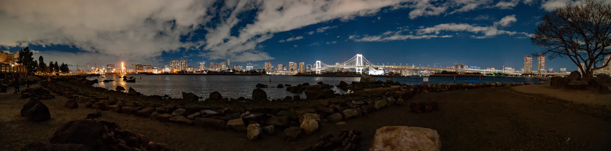

PERSONAL VISUAL ARCHIVE世界的切片，
世界的切片，
时间的存档。
沿着光的方向，收集那些值得记住的瞬间。
01 / SELECTED WORKS
浏览时间线 ↗精选影像每一帧，都有来处。
02 / CHRONOLOGICAL ARCHIVE
DEMO COLLECTION / 05 FRAMES时间里的影像／
把瞬间留住，让记忆有迹可循。
夜色与星光
03 FRAMES冬日的光
02 FRAMES
ARCHIVE VIEW / LAYOUT STUDY
SELECTED LOCATION
海湾的夜色
寻找脑海中的画面。
本预览按演示标题筛选；正式版沿用现有的自然语言视觉搜索。
全部示例 / 05